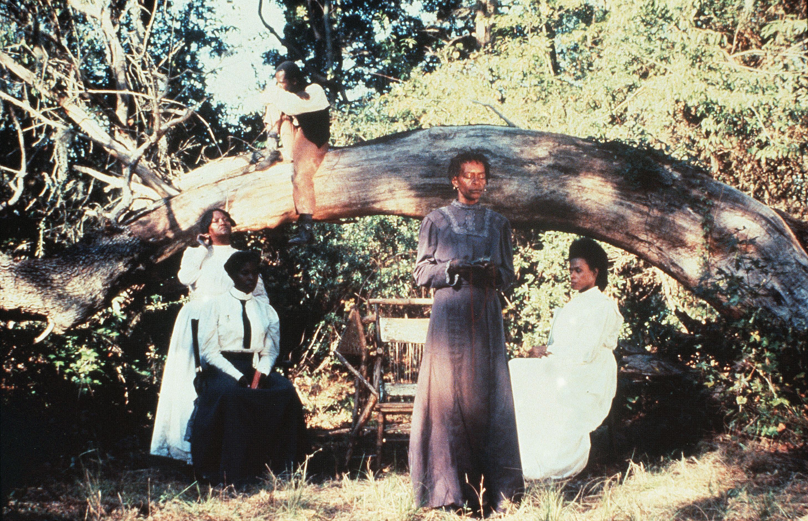
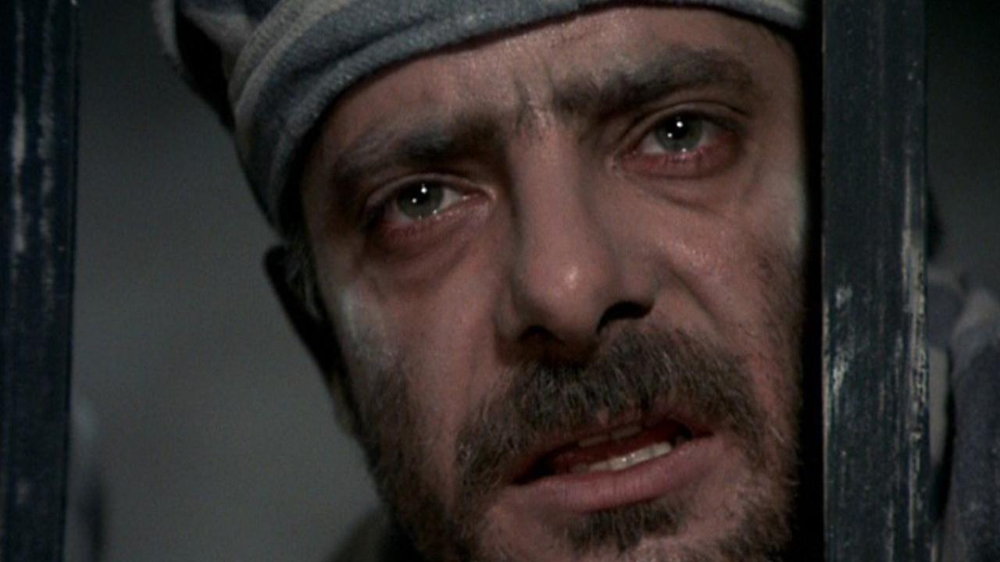
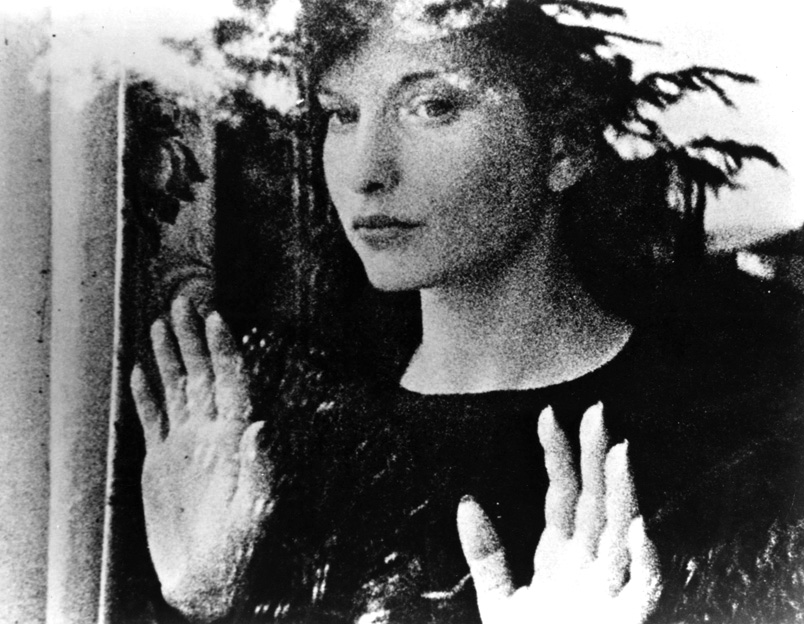
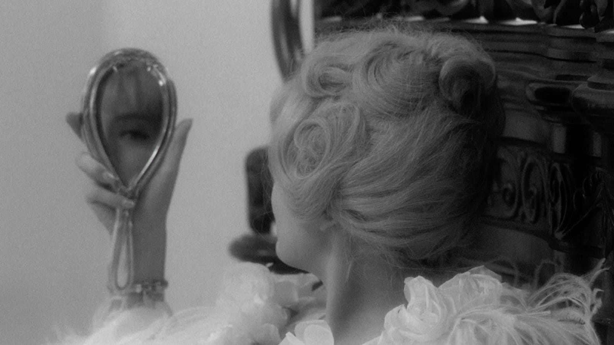
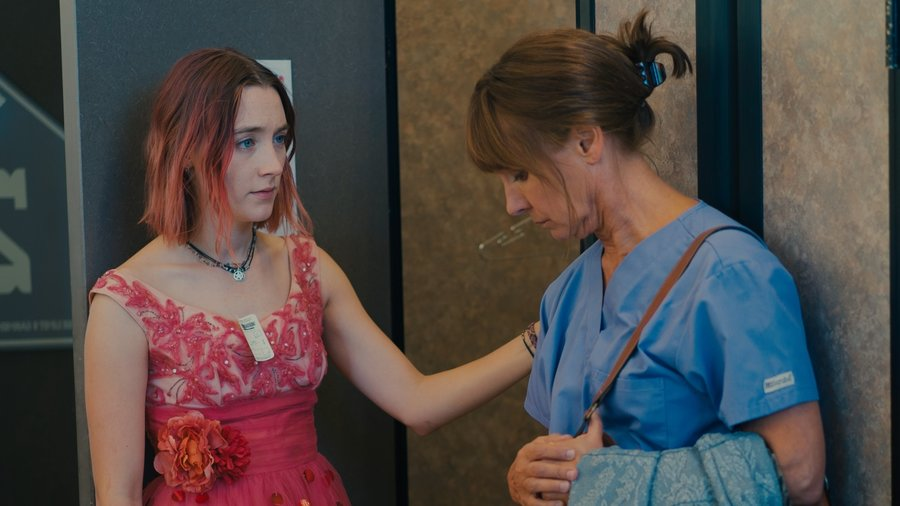
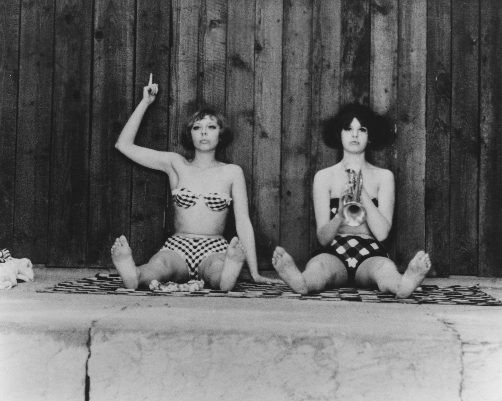
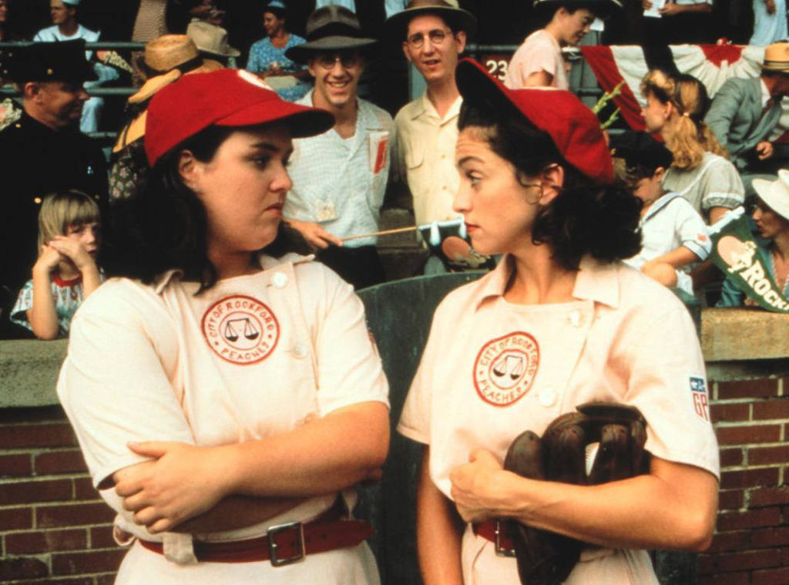
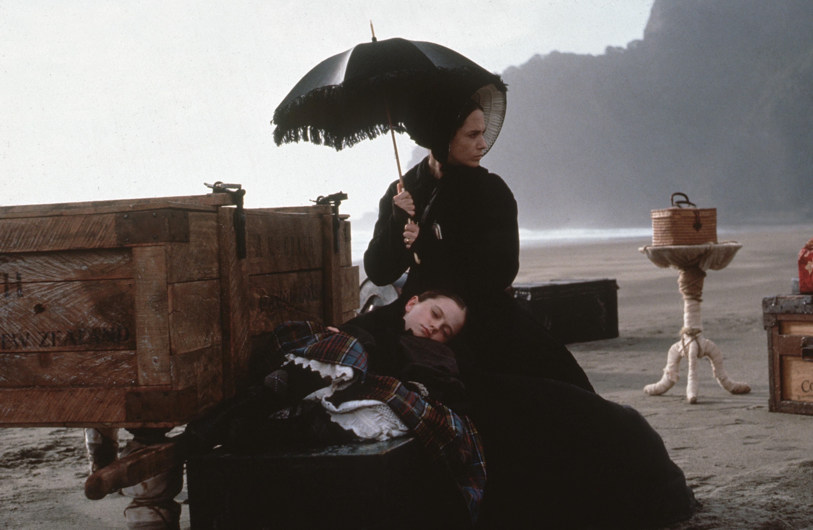
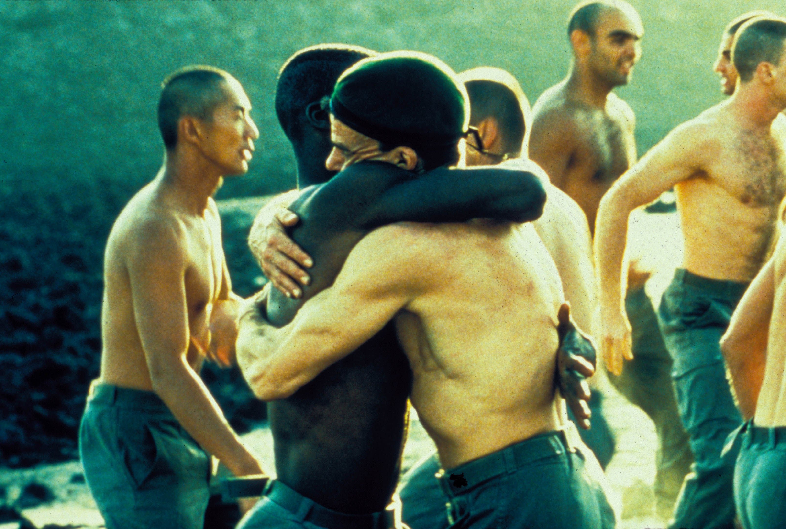
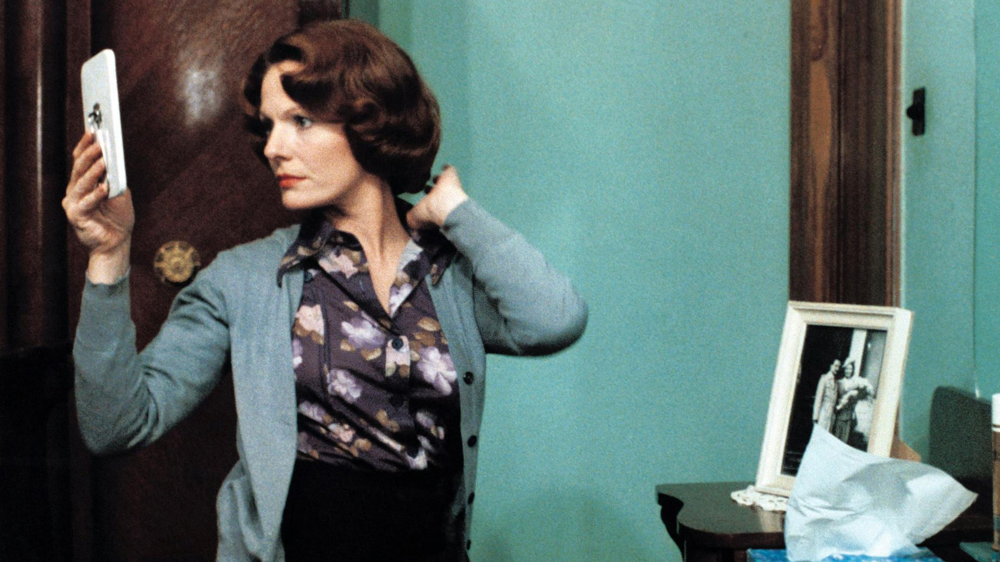

Sinema var olduğundan beri, film yapan kadınlar da var olmuştur. Lumière kardeşler, hareket halindeki bir trenin inanılmaz tasviriyle izleyicileri şok ederken, Alice Guy-Blaché yepyeni sanat formunda kendi tekniklerine öncülük ediyordu. DW Griffith sanatta ilerlemelere öncülük ederken ve kendi çalışmalarını yapmak için kendi stüdyosunu kurarken, Lois Weber de tam olarak aynı şeyi yapıyordu.
Hollywood'un Altın Çağı'nın derinliklerinde, Dorothy Arzner, Dorothy Davenport, Tressie Souders ve daha birçok kadın kendi filmlerini çekiyordu. Bu, aslında hiç azalmayan bir eğilim bile değildi, çünkü hiçbir zaman bir eğilim olmadı. Uzun süre boyunca, kadınların film yapımcısı olması normun bir parçasıydı ve son araştırmalar, sektörün en yetenekli film yapımcılarımızın (ki bunlar tesadüfen kadın) becerileri konusunda bir uyanışa ihtiyacı olduğunu açıkça ortaya koymuş olsa da, ilerlemeler kaydedilmeye devam ediyor. Tüm zamanların en iyi 10 kadın yönetmen filmi listesini sizler için derledik.
10. “Daughters of the Dust” (Julie Dash, 1991)

Julie Dash'in çığır açan 1991 yapımı tarihi draması, tartışmasız son 30 yılın en önemli filmlerinden biri. Geniş çaplı sinema gösterimi alan, Afrikalı-Amerikalı bir kadın tarafından yazılan ve yönetilen ilk ABD uzun metrajlı filmi olan bu yapım, 1900'lerin başlarında geçiyor ve Güney Carolina ve Georgia'nın kıyıları ve Deniz Adaları boyunca yerleşen köleleştirilmiş Afrikalıların soyundan gelen topluluklar olan Gullah Geechee kültürünün canlı bir portresini çiziyor. Kısmen Arthur Jafa'nın çarpıcı renkli sinematografisi sayesinde film, genç neslin adayı ve aile reisi Nana Peazant'ı (Cora Lee Day) anakaranın vaadi için terk etmeye hazırlanırken Peazant ailesinin son buluşmasını yakalıyor. 1803'teki Igbo Toprakları mitolojisini güçlü bir şekilde anımsatan "Tozların Kızları", günümüzde de yankı bulmaya devam ediyor; en son olarak Beyonce'nin "Lemonade" video albümüne ilham kaynağı oldu. Film, görüntü yönetmeni Jafa'nın gözetiminde ilk kez doğru renk düzenlemesiyle restore edildi ve böylece izleyiciler filmi nihayet yönetmen Dash'in amaçladığı gibi görebiliyor. —CO
9. “Seven Beauties” (Lina Wertmüller, 1976)

Pauline Kael, "Yedi Güzellik" hakkındaki küçümseyici eleştirisinde Lina Wertmüller'in "filmlerini izleyiciye salam fırlatarak ilerlettiğini" yazmıştı. Ve belki de bu doğru - sonuçta, bu acımasız kara komedi, Holokost sineması tarihinde bir penisin en rahatsız edici yakın çekimini içeriyor - ama Kael'in kastettiği anlamda değil. 1975'e gelindiğinde, filmler zaten 20. yüzyılın en büyük vahşetini görselleştirmek için yeni yollara açtı; savaş sonrası sinemanın otuz yılı bunu sindirilebilir görüntülerden oluşan ölü bir dile dönüştürmüştü. Wertmüller halka bir şeyler sunmak zorundaydı. Bu anlamda, başyapıtı tam bir şölen. Hayat dolu Giancarlo Giannini, Napoli'nin en azgın ve gösterişli serserisi Pasqualino "Yedi Güzel" Frafuso rolünde; onur yoksunluğu, bir toplama kampının ahlaksızlığına dayanabilmesinin tek umudu. Eski bir masalın pikaresk hafifliğini gerçek hayatın akıl almaz dehşetleriyle birleştiren ve dünyanın her zaman unutmanın eşiğinde olduğu bir kabusu yeniden canlandırmak için grindhouse sinemasının yıkıcı zevklerini kullanan Wertmüller'in en büyük ve en grotesk filmi, hayatta kalmayı başlı başına bir erdem olarak düşünme cesaretini gösterdi. Bu fikre sonuna kadar bağlı kalarak, "Yedi Güzel" Holokost'un sadece bir tür haline gelmesini engelledi. 40 yıldan fazla bir süre sonra bile aynı gücünü koruyor. —DE
8. “Meshes of the Afternoon” (Maya Deren, 1943)

Bazı filmler rüya gibi bir hayranlık duygusu uyandırır; Maya Deren'in "Öğleden Sonranın Örgüleri" ise gerçek bir rüyayı filme aktarmaya en çok yaklaşan yapımdır. 14 dakikadan kısa süren bu şaşırtıcı kısa film, Amerikan avangard hareketinde çığır açan bir başarı haline geldi ve nesiller boyu deneysel film yapımcılarını ve daha fazlasını etkiledi; zamanla, görsel olarak iddialı müzik videolarından David Lynch'in "Kayıp Otoyol"una kadar her şeyde popüler kültüre de yansıdı. (Genç Lynch, Deren'in çalışmaları aracılığıyla bu ortamın lirik olanaklarına maruz kalmasaydı, "Lynchvari" teriminin bile var olmayacağını söylemek yanlış olmaz.)
7. “Cléo from 5 to 7” (Agnes Varda, 1962)

Michel Legrand'ın müzikleri. Jean-Luc Godard ve Anna Karina'nın kısa rolleri. Tarot kartları, varoluşsal kaygı ve içselleştirilmiş kadın düşmanlığı üzerine kurulu bir olay örgüsü. "Cléo 5-7", 1962'de ilk gösteriminde Agnès Varda'yı Fransız Yeni Dalga akımının en önemli yönetmenlerinden biri haline getirdi, ancak bu filmde -ne gençliğin zahmetsiz hissi, ne de gelecekte ne olacağına dair derin kaygı- hiçbir şey son 57 yılda eskimedi. Cléo'nun trajik mantrası ("Güzel olduğum sürece yaşıyorum") Lana Del Rey'in bir şarkısının başlığı da olabilir. Ya da Lana Del Rey'in tüm şarkılarının başlığı da olabilir .
6. “Lady Bird” (Greta Gerwig, 2017)

Amerikan tarzı büyüme ve olgunlaşma öyküsü o kadar çok kez işlendi ki, artık bir ara verilmesi gerekiyor. "Lady Bird"ün mucizesi, yazar-yönetmen Greta Gerwig'in bu zorluğun üstesinden zahmetsiz bir çekicilik ve vizyonuna olan güvenle gelmesidir. Christine "Lady Bird" McPherson'ın iyi niyetli annesiyle (Laurie Metcalf) anlamsız bir tartışmadan kaçmak için hareket halindeki bir arabadan atladığı andan itibaren, Saoirse Ronan hayatının rolünü sergiliyor: tavır ve kavrayamadığı dünyaya dair merakla dolu, sert ve gerçekçi bir performans ve etrafındaki dünyayı anlamlandırma arayışı. Lady Bird bir dizi zorlukla boğuşuyor: onu bakireliğinden mahrum eden beceriksiz bir adam (Timothée Chalamet), eşcinsel olduğu ortaya çıkan bir aşk ilgisi, üniversite başvuru sorunları, aile kavgaları ve lise hayal kırıklıkları.
5. “Daisies” (Vera Chytilova, 1966)

İki kızın (ikisi de Marie adını taşıyor) toplumsal normlardan büyüleyici bir şekilde bağımsız maceralarını konu alan, son derece tuhaf ve yenilikçi bir film olan "Papatyalar", Věra Chytilová'nın modern Çek sinemasında neden bu kadar öncü olduğunu açıkça gösteriyor. Film yapımcısı, genel olarak Çek sinemasına ve özellikle feminist sinemaya olan önemine rağmen, etiketlerden nefret etti ve işleri kendi yöntemleriyle yapmaya çalıştı (bu da Çek hükümetiyle sık sık ters düşmesinin nedenini açıklıyor).
4. “A League of Their Own” (Penny Marshall, 1992)

Geçtiğimiz yılın sonlarında büyük Penny Marshall'ın ölümüyle, yakın geçmişteki en samimi kamuoyu yaslarından birinin yanı sıra, güçlü bir şey oldu: Sinemaseverlerin "A League of Their Own" filmine olan sevgilerini dile getirmeleri nihayet havalı hale geldi. 90'larda büyüyen erkek fatmaların kalplerinde her zaman bildikleri şey – "A League of Their Own"un zamanımızın en büyük Hollywood filmlerinden biri olduğu – birdenbire Wes Anderson hayranı orta yaşlı film meraklıları tarafından açıkça paylaşılan bir inanç haline geldi. Herkes Marla Hooch'un sarhoş serenatlarının ("Nelson'a şarkı söylüyorum!") tadını çıkarabilir veya Dottie'nin bir hızlı topu çıplak elleriyle hiç çekinmeden yakalamasına hayran kalabilirken, bu filmin her zaman kutsal bir anlam taşıdığı ve filmin bu listedeki yüksek sıralamasının onlara ithaf edildiği özel bir eşcinsel grup var.
3. “The Piano” (Jane Campion, 1993)

Jane Campion'ın duyarlılığı her zaman tutarlı bir feminist zihniyeti yansıtmıştır; kadınların hikayelerini merkeze alır ve onlara gerekli ağırlık ve saygıyla yaklaşır. "Sweetie"de iki çok farklı kız kardeşin hayatlarını cesurca ele alması ve "An Angel at My Table"da eşsiz yazar Janet Frame'in ilgi çekici biyografisi de dahil olmak üzere en eski eserleri, kadınların hayatlarına taze bir şekilde yatırım yapmıştır. Ancak Campion, 1993'te yayınlanan "The Piano" ile gerçek zirvesine ulaştı.
2. “Beau Travail” (Claire Denis, 1999)

Bu başyapıt üzerine ne kadar övgü yağdırılırsa yağdırılsın, hiçbiri onun ne kadar eşsiz bir sinematik başarı olduğunu tam olarak yansıtmıyor. Melville'in filmi, Cibuti'deki Fransız Yabancı Lejyonu'nda geçiyor ve genç, gelecek vaat eden bir askerin alaya katılmasıyla bir subayda kıskançlık tohumlarının ekilmesini konu alıyor. "Moonlight" gibi -ki bu film de açıkça "Beau Travail"in ruhundan doğmuştur- erkekliğin incelenmesi, bir ayağı duygusal gerçekçiliğe, diğer ayağı ise güneşle yıkanmış, sinematik bir rüyaya dayanıyor.
1. “Jeanne Dielman, 23 Quai du Commerce, 1080 Bruxelles” (Chantal Akerman)

Eğer gündüzleri gerçek zamanlı olarak patates soyan ve geceleri bedenini satan bekar bir anneyi izlemek size sinemanın özü gibi gelmiyorsa, sonunda "Jeanne Dielman"ı izleme zamanınız geldi demektir. Chantal Akerman'ın başyapıtı - 201 dakika süren ve neredeyse tamamen baş karakterinin mütevazı dairesinde geçen - film tarihinde bir dönüm noktasıdır ve bu sadece haklı olarak sinemanın ilk kadın başyapıtı olarak kabul edilmesinden kaynaklanmaz. Benzeri başka hiçbir şey yok, üstelik Akerman hem erkek hem de kadın film yapımcılarının bir veya iki kuşağını etkilemiştir. Delphine Seyrig'in etkileyici performansı, sınırlı diyalogla ama iki gün boyunca en sıradan işleri yaparken sergilediği sonsuz duyguyla, ev içi bunalımın pençesindeki bir kadını bize gösteriyor. Her kare gerilim ve sessiz bir heyecan yayıyor, bu da filmi kültürel bir sunumdan ziyade buruk bir zevk haline getiriyor. Jeanne'nin ev işlerinin akşam yemeğinden çok daha olaylı bir şeyin sadece bir başlangıcı olduğunu söylemek yetersiz kalır, tıpkı "Jeanne Dielman"ı bir kadın yönetmen tarafından çekilmiş en iyi film olarak adlandırmak gibi. Öyle, ama aynı zamanda gelmiş geçmiş en önemli filmlerden biri. —MN